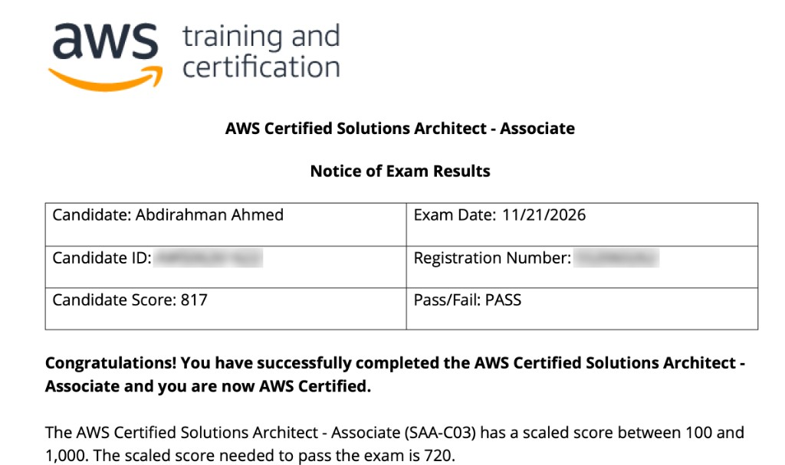

AWS Certified Solutions Architect — Associate (SAA-C03)

If you are reading this, you are either preparing for the AWS Certified Solutions Architect — Associate exam or deciding whether to sit it. I cleared SAA-C03 with a score of 817 on November 21, 2026. The path there included confusion, self-doubt, mock tests I failed, and a lot of conversations with AI. AI became my personal tutor.
Here is exactly what worked across those six weeks.
My Starting Point
I was already using AWS at work: EC2, S3, IAM, EKS, CloudFront, and a few others. That experience got me into the console. It did not teach me how to choose.
SAA-C03 lives in that gap. The points come from knowing when S3, EFS, EBS, or FSx is the right call, and why that call fits the requirement in the question. I gave myself 1 month and 2 weeks to close it.
Phase 1: The Foundation
I started with a Udemy course that walks the exam domains and includes hands-on labs. The explanations are clear, and the labs put the services on screen so the names stop being abstract.
AWS Certified Solutions Architect Associate Course
The course gave me a map of the exam. Watching it was the foundation. The first mock test showed me the holes in that map.
Phase 2: Mock Tests
After the course I bought the practice exams from the same instructor.
My first mock landed around 65%. The passing score is 720 out of 1000, roughly 72%, so I was short. The questions were harder than the videos had prepared me for, and the misses clustered around scenarios where more than one answer could work in real life.
AWS often offers several valid designs for the same problem. The exam asks for the one that best matches the constraint in the stem:
- Cost optimization
- High availability
- Low latency
- Minimal operational overhead
That is where the prep changed.
Phase 3: AI as My Tutor
I used GitHub Copilot, on Claude, as a standing AWS tutor. Across the rest of the six weeks, that was the difference between recognizing a service and being able to defend a choice.
1. Conversational learning
I stopped treating documentation as something to reread in silence. I asked the question the way I was actually stuck:
The replies came back with plain analogies I could reuse on the next question. Concepts stayed because I had argued with them, not because I had highlighted them.
2. Every mock, discussed
When I missed a question, or got it right and still felt unsure, I pasted it in and stayed on it:
The goal was the reasoning. Memorizing the letter never survived the next scenario that swapped cost for latency.
3. The topics that kept slipping
A few comparisons refused to stick: SQS versus Kinesis, CloudFront versus Global Accelerator, and the database options. I kept those threads open until the picture was simple enough to remember under a timer.
The line that finally locked CloudFront and Global Accelerator for me: Global Accelerator is a fast lane into AWS, and CloudFront is a local cache. Once I had that, the question stems started sorting themselves.
4. A cheatsheet built from my own misses
Near the end I asked the AI to compile our conversations into one cheatsheet: comparisons, decision rules, and the exact points I had gotten wrong. It was built from my gaps. I revised it the night before the exam, and it carried me through the questions that used to blur together.
The Climb
The whole window was six weeks. Videos, mocks, and those AI discussions ran together, and the practice scores moved like this:
| Point in the 6 weeks | Mock score |
|---|---|
| Week 2 | ~65% |
| Week 3 | ~70% |
| Week 5 | ~75% |
| Week 6 | ~80% |
Once the practice tests were landing around 80%, I booked the exam.
Registering
Registration goes through the AWS Certification portal. There are two ways to sit it:
- Testing center. A physical Pearson VUE site.
- Online proctored. From home, with a proctor watching the session.
I chose the online proctored exam for convenience.
What I Would Repeat
Six weeks was enough because the work was specific. The course built the map, the mocks showed the gaps, and AI turned every miss into a rule I could reuse. The cheatsheet the night before was a record of my own confusion, and that is what I remembered in the exam.
If you already touch AWS at work, the exam will still feel new. Budget the short window for decisions, not for another tour of the console. Sit mocks early, and do not leave a wrong answer until you can explain the better one out loud.
Ready to sit SAA-C03?
Pick a date, protect the six weeks, and study the questions you get wrong until the choice is obvious.
AWS Solutions Architect — AssociateGood luck on your certification journey.
← Back to Blog